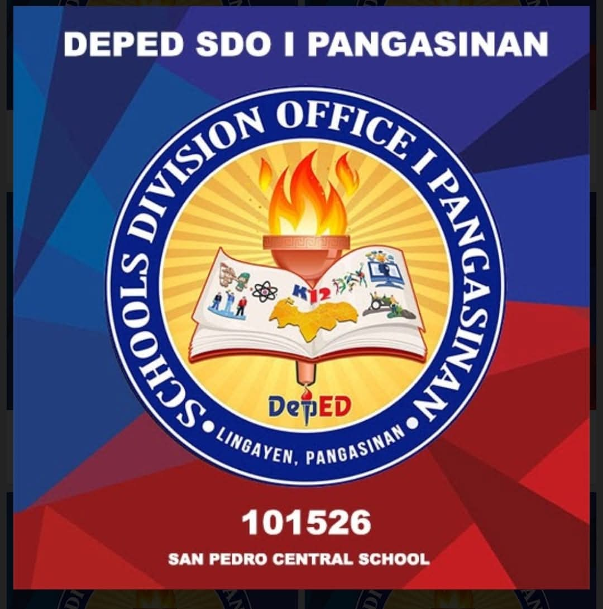
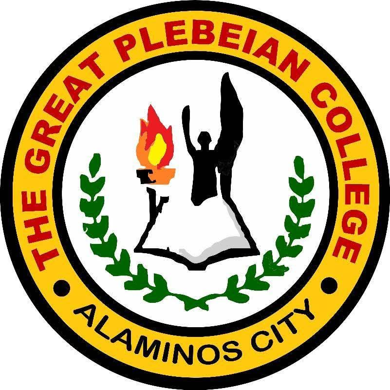
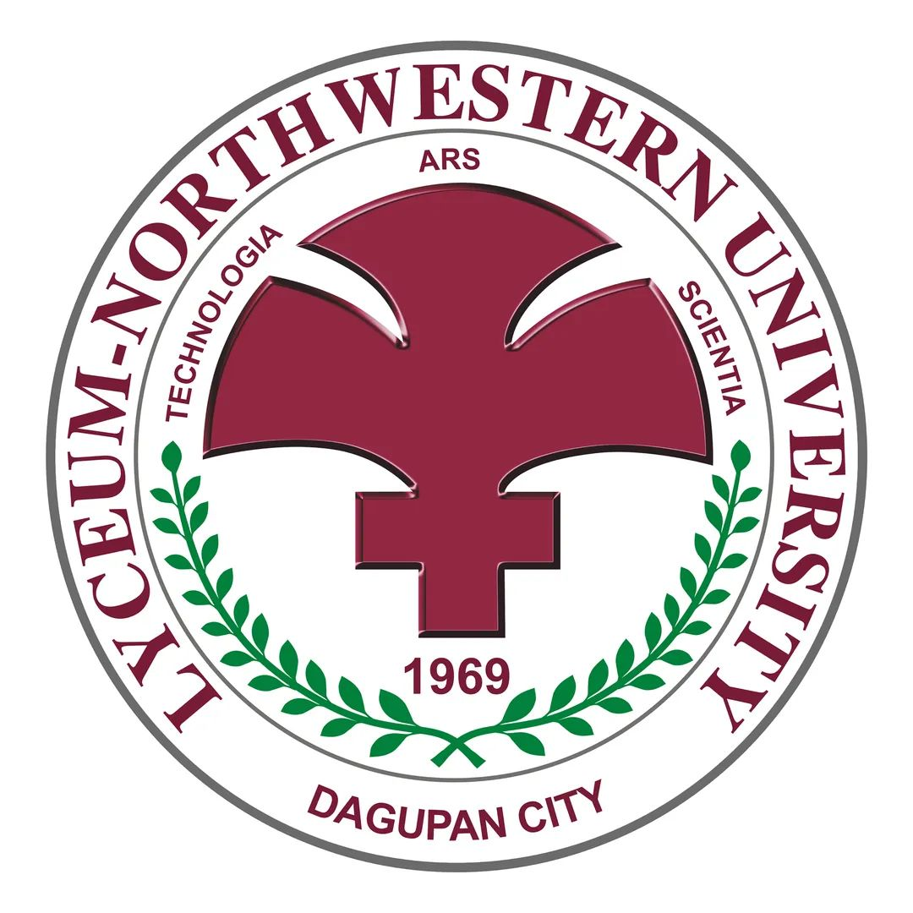
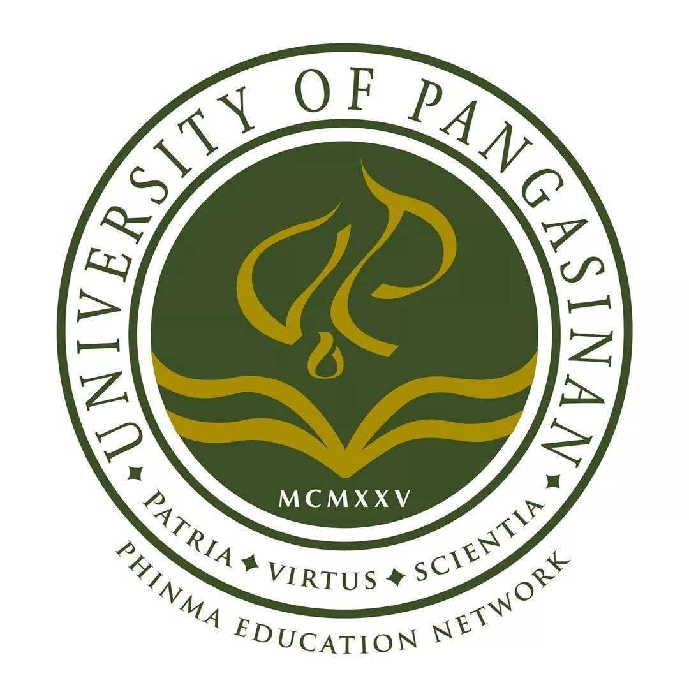
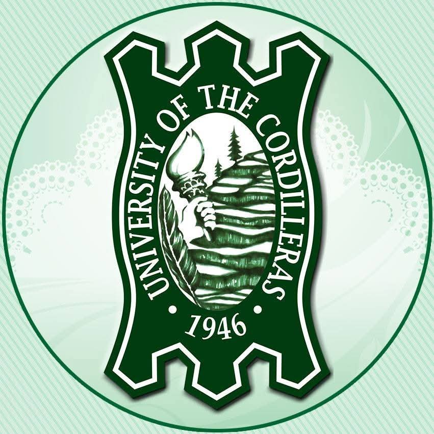

Educational background
My academic journey.
2011–2017
San Pedro Elementary School
Kinder–Grade 5 · San Pedro, Mabini, Pangasinan

2017–2018
Mary the Queen Educational Foundation
Grade 6 · Alaminos City, Pangasinan
2018–2021
Mary the Queen Educational Foundation
Grades 7–8 · Alaminos City, Pangasinan
2021–2022
The Great Plebian College
Grade 9 · Alaminos City, Pangasinan

2022–2025
Lyceum North-Western University
Grade 10 · Senior High STEM · Dagupan City, Pangasinan

2025–2026
PHINMA–University of Pangasinan
First-year college · BS Civil Engineering

2026–Present
University of the Cordilleras
College · BSIT, Major in Networking and Security · Baguio City

Academic achievements
What I have accomplished.
Academic recognition
- With Honors — Grade 6
- With Honors — Grades 7–8
- With Honors — Grade 9
- With Honors — Grade 10
- With Honors — Senior High School
Special awards
- Best in Filipino
- Best in Social Sciences
- Best in Research Capstone Project Paper
- Best in Product Innovation
- Best in TLE
I am proud of what I have accomplished, but I am even more interested in the person I am still becoming.
Leadership & involvement
Beyond the classroom.
Leadership
- SPG Representative — Grade 3
- YES-O President — Grade 5
- Leadership and responsibility opportunities
Organizations & activities
- Star Scout · Dancer Badge · Junior Girl Scout
- Theater participant · Drum and Lyre Corps
- Science Club · Filipino Club
- Tagapamayapa Filipino Club member
These achievements remind me that I have always had the willingness to participate, learn, and take on responsibilities. They are part of my story, but they do not define the entirety of who I am.
Photo memories
Discover the moments.
The photos are intentionally hidden until you choose a category. Click a card to open the corresponding gallery.